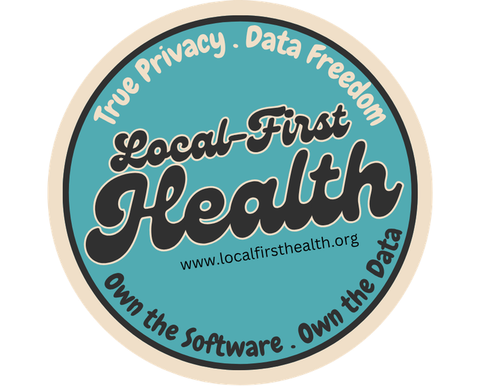

for review
Five principles to build toward.
These five proposed principles describe the health apps we want to see built. Each connects a belief to practical requirements and a question you can ask a software provider.
They are aspirations for software, not delivered LFH capabilities or a development schedule. No clinical product is available through LFH.
Local-first software keeps a usable copy of data on your device and supports work without a constant internet connection. Sharing between systems requires additional design and testing.

The badge expresses the goals behind these principles. Privacy and control depend on how each app is built.
Keep records usable when people change tools.
What it means for you
A clinic should be able to switch software without losing the records it is responsible for. A patient should be able to obtain their records and take them to the next clinic.
What it requires
- A documented way to export every record, in a format another tool can read.
- Continued access to existing records, even after a subscription or contract ends.
- No fee to get existing records back.
The question to askCan I retrieve every existing record without a fee, and what would another tool need to use it?
Support essential work offline.
What it means for you
Essential recordkeeping should stay available when the connection drops, with documented limits. Work that needs a connection should be clearly identified.
What it requires
- A published list of which tasks work without a connection.
- A published list of what waits until the connection returns.
- Tests of the offline tasks and their limits, with findings available to the people using the software.
The question to askIf the internet goes down at 10 a.m., what can my clinic still do, and what has to wait?
Make records useful across care settings.
What it means for you
The next clinic, lab, or pharmacy should be able to read and use the record. Sharing between systems requires additional design and testing.
What it requires
- Shared health data standards, such as FHIR (a common standard for exchanging health records).
- The source and date of each record kept with it, so the next clinician knows where it came from.
- Testing with at least one other tool, with the results published.
The question to askIf I send this record to another clinic, can their software use it, and can they see who wrote it and when?
In a 2022 interview with Stanford Medicine’s Dean Lloyd Minor, Reed Jobs discussed fragmented clinical records and people’s control over access to their data. Listen to their conversation on The Minor Consult.
Publish the foundations for others to build on.
What it means for you
Open code and documentation should let builders learn from each other and adapt software to local needs. A clinic should be able to keep using the tools it relies on.
What it requires
- A shared foundation codebase remains an ambition. No release date, scope or license has been announced.
- If a foundation is released, its code, license, documentation and contribution rules should be available together.
The question to askIs the code public, under what license, and who decides what changes?
Test with the people doing the work.
What it means for you
Clinicians and patients should help shape what matters first. Priorities should reflect the work and be open to question.
What it requires
- Testing with clinicians and patients in real settings before making claims about usefulness.
- Documented findings and limits, including what did not work.
The question to askWho tested this, where, and what did they say was missing?
One policy, stated plainly
Paying for software or support should never be a condition of retrieving existing records.
Open questions for builders
Putting these principles into practice raises important design questions. If you build software, share how you would approach them.
- What counts as "essential"? Which clinic tasks must work offline on day one, and which can wait?
- Two people, one record. When two clinicians edit the same record offline, how should changes merge safely?
- Shared ownership in practice. How should a patient's copy and a provider's copy of the same record stay in step?
- Protecting local copies. How should devices, backups, and keys be protected when data lives on the device?
- Starting small with standards. What is the smallest useful set of FHIR resources to support first?
For builders
LFH’s mission sits within a wider local-first software community. These independent resources offer places to learn and explore; they are not endorsements of LFH or assessments of suitability for clinical use.
- LoFi — a community hub for discovering local-first resources and projects.
- Local-first Conf — a conference for people exploring and building local-first software.
- The Architecture Of Local-First Web Development — a developer’s perspective in Smashing Magazine, including when the approach may not fit.
- Martin Kleppmann on local-first software — a Software Engineering Radio interview and transcript covering architecture, synchronization and tradeoffs, from IEEE Computer Society and IEEE Software magazine.
Help shape these
These are proposals. Tell us what's missing, wrong, or unworkable.
Email hello@localfirsthealth.org with the subject "Principles feedback".